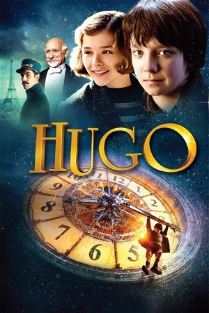

Hugo (2011)
AdventureDramaFamily
| Year | 2011 |
|---|---|
| Rating | US:PG / US:Rated PG |
| Genre | Adventure, Drama, Family |
Orphaned and alone except for an uncle, Hugo Cabret lives in the walls of a train station in 1930s Paris. Hugo's job is to oil and maintain the station's clocks, but to him, his more important task is to protect a broken automaton and notebook left to him by his late father. Accompanied by the goddaughter of an embittered toy merchant, Hugo embarks on a quest to solve the mystery of the automaton and find a place he can call home.